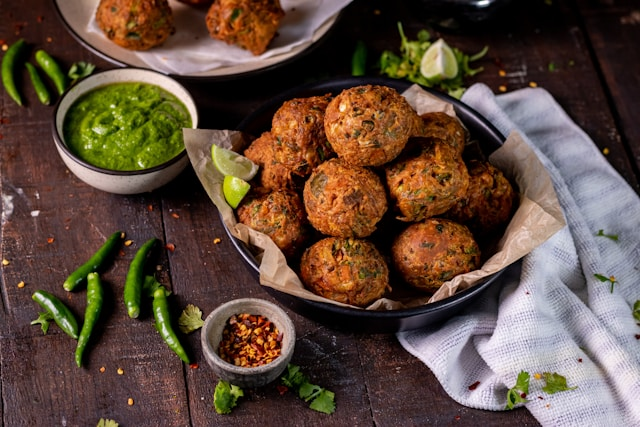

Back Home
Meatballs

Description
Great gluten-free meatball recipe. Minimal dairy with parmesan cheese.
Ingredients
- 1-1/2 lb Veal Chop Meat
- 1-1/2 lb Top Round or Sirloin Chop Meat
- 1 Cup GF Bread Crumbs
- 1 Cup Water
- 3/4 Cup Parmesan Cheese
- 5 - Cloves Garlic (Chopped Fine)
- Parsley Chopped
- 3 Eggs
Steps
- Combine all the dry ingredients in a mixing bowl.
- Add all the wet ingredients to the bowl and mix.
- Roll into individual meatballs (should make 35).
- Cook on a pan with some oil.